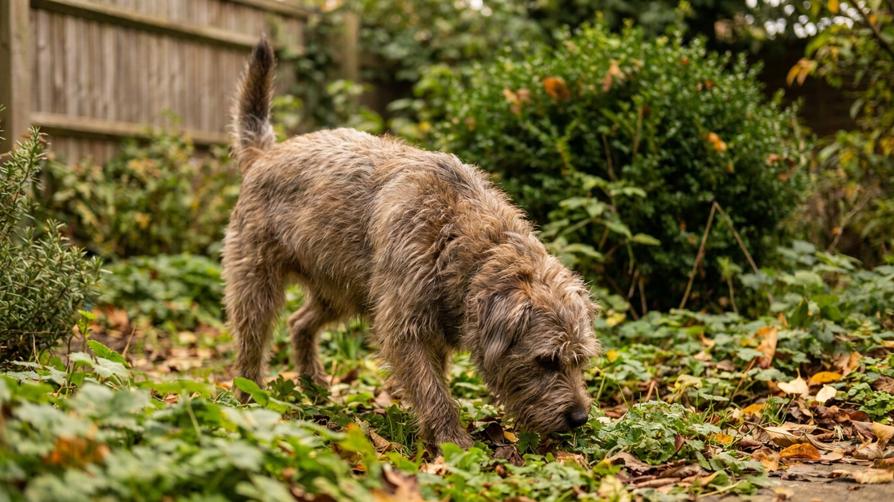

По данным исследования Калифорнийского университета Дейвис (Hart & Hart, 2018), копрофагию демонстрируют 16% домашних собак — каждая шестая. Это одна из самых распространённых жалоб владельцев. Проблема неприятна, но решаема: разбираем 6 научно обоснованных причин и конкретный пошаговый план — без мифов об «ананасовых добавках» и без бесполезного наказания.
🐾 Питомец ведёт себя странно?
AnimaLife расшифрует поведение кошки и собаки и подскажет, что делать. Попробуйте бесплатно прямо в мессенджере.
Копрофагия (от греч. kopros — экскременты, phagein — есть) — поведение, при котором собака поедает продукты пищеварения. У собак различают:
Аллокопрофагия кошачьего лотка — отдельная история: помёт кошек богат белком и жиром из-за особенностей кошачьего пищеварения, для многих собак это буквально «деликатес». Это неприятно, но медицинская угроза минимальна.
Аутокопрофагия более тревожна с медицинской точки зрения: она может указывать на нарушения пищеварения, дефициты питательных веществ или психологические причины. Основные риски: возможное заражение паразитами и бактериями — повод обсудить с ветеринаром.
Если пища плохо переваривается, в продуктах пищеварения остаются непереваренные белки и жиры с запахом, который собака воспринимает как съедобный. Это особенно характерно при:
Что обсудить с ветеринаром: анализ стула на непереваренные вещества, анализ крови на ферментативную функцию поджелудочной железы. При подтверждённой недостаточности врач подберёт поддерживающую терапию.
Практически: перейдите на корм с высокой усвояемостью (highly digestible). Меньше неусвоенного белка в стуле — меньше привлекательности для собаки.
В дикой природе поедание помёта — способ получить витамины группы B, произведённые кишечными бактериями. Такое поведение описано у волков. У домашних собак оно может указывать на:
Что делать: проверьте нормы кормления по весу и активности. Если кормите натуральным — проконсультируйтесь с ветеринарным нутрициологом. Состав и объём добавок назначает врач — самостоятельный подбор может навредить.
Кишечные паразиты конкурируют с собакой за питательные вещества. Собака хронически «голодна» на клеточном уровне, инстинктивно ищет дополнительные источники питания. Копрофагия в этом случае — следствие, а не самостоятельная проблема.
Что делать: регулярная профилактика паразитов по схеме, которую согласовал ветеринар — обычно несколько раз в год для собак с выгулом. Конкретный препарат и частоту подбирает врач с учётом веса, образа жизни и условий содержания.
Поведенческая копрофагия — часто реакция на:
Что делать: исключить наказания за туалет (только позитивное подкрепление правильного места). Увеличить прогулки и физическую нагрузку. При выраженной тревоге — обратиться к ветеринарному поведенческому специалисту: он оценит, нужна ли поведенческая коррекция или дополнительная поддержка.
Щенки, выросшие рядом с матерью, практикующей копрофагию, копируют это поведение. Мать облизывает щенков, стимулируя дефекацию — это физиологическая норма. Иногда связь между «уборкой логова» и поеданием закрепляется у взрослой собаки.
Кроме того, если хозяин бурно реагирует на попытку съесть экскременты — кричит, бежит, хватает — это само по себе становится подкреплением («интересная реакция!»), особенно у собак с высокой потребностью во внимании.
Решение: спокойная команда «оставь» с переключением внимания, немедленная уборка продуктов пищеварения с территории — убрать источник раньше, чем собака успеет подойти.
У щенков до 6 месяцев копрофагия — вариант нормы. Это исследовательское поведение, часть познания мира. 85% щенков перестают сами по себе к 9-12 месяцам без каких-либо вмешательств. Кормящие суки поедают продукты пищеварения щенков для поддержания чистоты гнезда — абсолютная норма.
Это не требует коррекции, если нет рисков (паразиты). Достаточно убирать за щенком и следить за гигиеной.
Ананасовый сок в еде — популярный интернет-совет. Логика: ананас содержит бромелайн, продукты пищеварения становятся горькими. Реальность: двойное слепое исследование Hart et al. (2018) показало нулевую эффективность пищевых добавок по сравнению с плацебо в 71-85% случаев. Не тратьте время.
Физическое наказание — усиливает тревогу и скрытность, часто усугубляет копрофагию. Кричать, тыкать носом, бить — всё это делает проблему хуже.
Ждать «само пройдёт» у взрослой собаки — у щенков да, проходит. У взрослой собаки без устранения причины выученное поведение только закрепляется.
Материал носит информационный характер и не заменяет очную консультацию ветеринара. При любых тревожных признаках обращайтесь к специалисту.
🐾 Здоровье питомца под контролем
AI-ветеринар, дневник здоровья и персональные советы для вашего питомца — установите AnimaLife бесплатно.